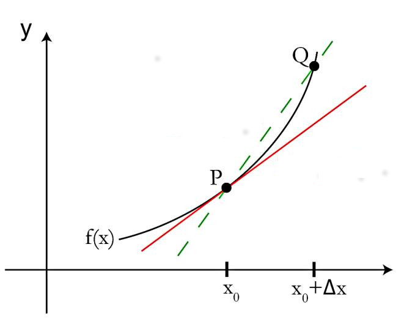
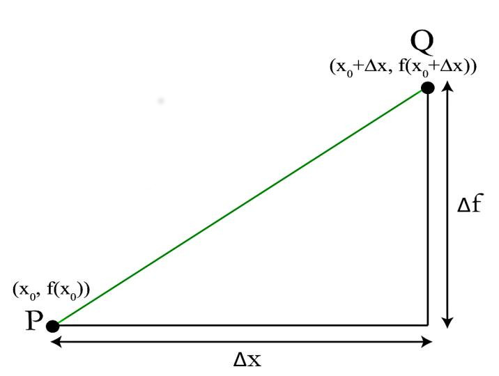
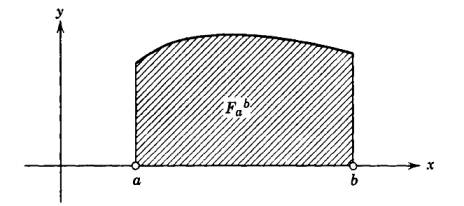
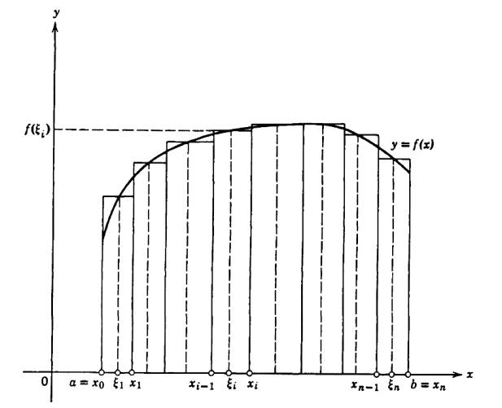
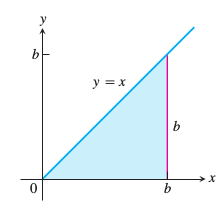

Türevler ve Entegraller
Türev ve entegral kavramlarını teorik olarak nasıl açıklarız? Her iki kavram da modern matematikte artık limitler üzerinden temsil ediliyor.
Türev
Geometrik olarak bakarsak, bir $f(x)$ fonksiyonu var diyelim, bu fonksiyona $P$ noktasında teğet olan sekant çizgisi olsun [1],

Bu çizgi üzerinde iki nokta seçelim, $P,Q$'ya tekabül eden x ekseni üzerinde biri $x_0$'da diğeri $x_0 + \Delta x$ üzerinde. Bu bölgeye yakından bakarsak,

$f'(x_0)$'nin, yani $x_0$ noktasında $f$'nin türevinin limitler üzerinden tanımı şöyledir,
$$ \lim_{\Delta x \to 0} \frac{\Delta f}{\Delta x} = \lim_{\Delta x \to 0} \frac{f(x_0 + \Delta x) - f(x_0)}{\Delta x} = f'(x_0) $$
Giriş seviyesinde Calculus'tan bilinen üsteli bir azaltıp çarpım haline getirme tekniğini hatırlarsak, mesela $f(x) = x^2$ ise $f'(x) = 2x$ gibi, bu tekniği limitler ile türetebiliriz. Genel bir $x^n$ için türetelim, aradığımız oran şudur,
$$ \frac{\Delta f}{\Delta x} = \frac{(x_0-\Delta x)^n - x_0^n}{\Delta x} \qquad (1) $$
Son ifadede $x_0$ yerine $x$ kullandık, notasyonu basitleştirmek için. Devam edelim, $(x+\Delta x)^n$ nedir? Genel bir $(p + q)^n$ için düşünürsek,
$$ (p+q)^2 = p^2 + 2pq + q^2 $$
$$ (p+q)^3 = p^3 + 3 p^2 q + 3pq^2 + q^3 $$
$$ (p+q)^4 = p^4 + 4p^3 q + 6p^2 q^2 + 4p q^3 + q^4 $$
gibi devam edecektir.. Nihai formül için Binom Teorisi konusuna bakılabilir [3]. Fakat eldeki formüllerde bile bir kalıp farkedebiliyoruz, bu kalıp
$$ (p+q)^n = p^n + n p^{n-1} q + O(q^2) + q^n $$
olarak ifade edilebilir. $O(q^2)$ olarak gösterilen "$q^2$ ve üstü derecesini içeren terimlerin toplamı" notasyonudur. Bu tür bir gruplamak yapmak bize limit alırken faydalı olacak. Problemimize uygularsak,
$$ (x+\Delta x)^n = x^n + n (\Delta x)x^{n-1} + O(\Delta x^2) $$
Bu ifadeyi (1) içine koyalım,
$$ \frac{\Delta f}{\Delta x} = \frac{x^n + n (\Delta x)x^{n-1} + O(\Delta x^2) - x^n}{\Delta x} $$
$x^n$'ler iptal olacaktır, $\Delta x$ ile böldükten sonra
$$ = n x^{n-1} + O(\Delta x) - \frac{x^n}{\Delta x} $$
Üstteki ifadenin limitini alınca $\Delta x$ içeren ifadeler yokolur,
$$ \lim_{\Delta x \to 0} \frac{\Delta f}{\Delta x} = n x^{n-1} $$
Yani
$$ \frac{\mathrm{d} }{\mathrm{d} x} x^n = n x^{n-1} $$
Her türlü fonksiyon için limit yaklaşımı kullanılabilir, mesela $\sin(x)$ örneği [4]'te işlendi.
Entegral
Bir eğrinin altındaki alanı entegral ile hesaplıyoruz. Modern matematikte entegralin formel tanımı da limit kavramı üzerinden yapılıyor. İki nokta $a,b$ arasındaki bir eğrinin altında kalan alan

olsun. Bu alanın hesabı için ayrıksal bir hesapla başlıyoruz, alanı $n-1$ tane dikdörtgen şerite bölüyoruz,

Dikdörtgenler $x_0,x_1,..,x_n$ noktalarını baz alıyor, her aralık içinde herhangi bir $\xi_i$ seçerek bu değere tekabül eden $f(\xi_i)$ ile her dikdörgenin alanı hesaplanıyor [2, sf. 124]. Tum dikdortgenleri toplarsak,
$$ F_n = f(\xi_1)(x_1 - x_0) + f(\xi_2)(x_2 - x_1) + .. + f(\xi_n)(x_n - x_{n-1}) $$
$\Delta x_i = x_i - x_{i-1}$ diyelim,
$$ F_n = f(\xi_1)\Delta x_1 + f(\xi_2)\Delta x_2 + .. + f(\xi_n)\Delta x_n $$
Toplam sembolu kullanarak
$$ F_n = \sum _{i=1}^{n} f(\xi_i) (x_i - x_{i-1}) $$
Ya da
$$ F_n = \sum _{i=1}^{n} f(\xi_i) \Delta x_i $$
Entegralın formel tanımı üstteki toplam üzerinden,
$$ \int _{a}^{b} f(x) \mathrm{d} x = \lim_{n \to \infty} F_n $$
Entegralın "türevin tersi olduğu" bilgisinden bugün standart matematik bilgisi $x^2$ entegralinin türevde yapılan üstel azaltmanın tersini yapacağını bilir, azaltmak yerine çoğaltırız, $x^2$ için $x^3 + C$ elde ederiz (tanımsız -indefinite- entegral için $C$ sabiti eklenir çünkü türev sırasında yokolması mümkün olabilecek bir sayıdır bu, tanımlı entegral için şart değil), fakat bu ilişkiyi bilmeseydik hala formel tanım üzerinden bu kurala erisebilirdik.
Eşit aralıklara bölelim büyüklükleri $h = (b-a)/n$ olsun. Toplam
$$ F_n = (a+h)^2 h + (a+2h)^2 h + ... + (a+nh)^2 h $$
olarak gösterilir, cebirsel işlemleri yaparsak,
$$ = na^2 h + 2ah^2 (1+2+..+n) + h^3 (1^2+2^2+...+n^2) $$
$$ = na^2h + n(n+1)ah^2 + \frac{1}{6} (n(n+1)(2n+1))h^3 $$
$$ = a^2 (b-a) + (1+\frac{1}{n})a (b-a)^2 + \frac{1}{6} (1+\frac{1}{n})(2+\frac{1}{n})(b-a)^3 $$
$\lim_{n\to\infty} 1/n = 0$ olduğu için
$$ \lim_{n\to\infty} F_n = a^2(b-a) + a(b-a)^2 + \frac{1}{3} (b-a)^3 $$
$$ = \frac{1}{3} (b^3 - a^3) $$
Aradığımız sonuca eriştik.
Bir diğer örnek $f(x) = x$, yani 45 dereceli çizginin altındaki alan hesabı, $I = \int_{0}^{b} x \mathrm{d} x$.

Her parca esit genislikte, $n$ tane var, $\Delta x = (b - 0) / n = b/n$, parcalar $P = \left\{ 0, \frac{b}{n}, \frac{3b}{n}, ..., \frac{nb}{n} \right\}$ her $c_k = \frac{kb}{n}$. O zaman
$$ \sum_{k=1}^{n} f(c_k) \Delta x = \sum_{k=1}^{n} \frac{kb}{n} \cdot \frac{b}{n} $$
$f(x) = x$ olduğu için doğal olarak $f(c_k)=c_k$ diyebildik. Devam edelim,
$$ = \frac{kb^2}{n^2} = \frac{b^2}{n^2} \sum_{k=1}^{n} k $$
$\sum_{k=1}^{n} k$ ilginç bir toplam, aslında 1'den n'ye kadar tüm sayıları topla diyor, bu toplamın $\frac{n(n+1)}{2}$ olduğunu biliyoruz,
$$ = \frac{b^2}{n^2} \frac{n(n+1)}{2} $$
$$ \frac{b^2}{2} (1 + \frac{1}{n}) $$
$n \to \infty$ iken üstteki ifadenin $b^2/2$ limitine yaklaştığını biliyoruz, yani
$$ \int_{0}^{b} x \mathrm{d} x = \frac{b^2}{2} $$
Kaynaklar
[1] Jerison, 18.01 Single Variable Calculus, Fall 2006, https://ocw.mit.edu/courses/18-01-single-variable-calculus-fall-2006
[2] Courant, Introduction to Calculus and Analysis, Volume 1
[3] Wikipedia, Binomial Theorem, https://en.wikipedia.org/wiki/Binomial_theorem
[4] Bayramli, Normal Diferansiyel Denklemler, Türevler ve Entegraller 2
Yukarı